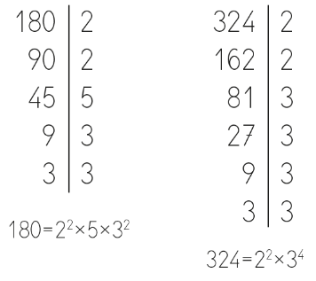
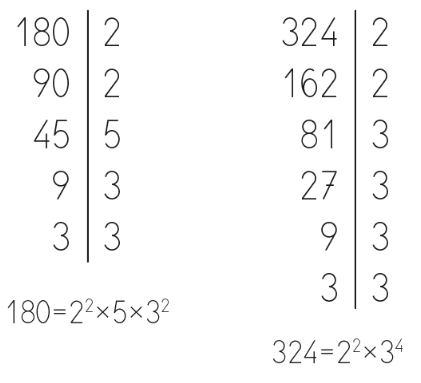
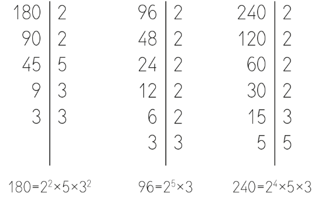

Minimo comun multiplo y minimo comun divisor
MÍNIMO COMÚN MÚLTIPLO
¿Qué es el mínimo común múltiplo?
El mínimo común múltiplo de dos o más números es el múltiplo más pequeño que esos números tienen en común.
El mínimo común múltiplo se suele expresar con las siglas m.c.m. (a, b), siendo a y b los números.
¿Cómo se calcula el mínimo común múltiplo, m.c.m?
Vamos a aprenderlo con un ejemplo, calculamos el mínimo común múltiplo de 180 y 324.
m.c.m. (180,324)
1. Para calcular el mínimo común múltiplo de dos o más números, empezamos por descomponer esos números en factores primos.

2. El mínimo común múltiplo se obtiene cogiendo todos los factores (comunes y no comunes), elevados a la máxima potencia. Es decir cogemos todos los factores, pero los que se repitan los cogemos elevados a la máxima potencia.
m.c.m. (180,324)= 22x5x34
El 2 aparece como factor primo en ambas descomposiciones, en ambos casos está elevado a 2.
El 5 sólo aparece en la descomposición de 180, pero tenemos que coger todos.
El 3 aparece como factor en ambas descomposiciones, pero cogemos el denominador más elevado.
3. Hacemos la multiplicación y obtenemos el mínimo común múltiplo.
m.c.m. (180,324)= 22x5x34= 1620
MÁXIMO COMÚN DIVISOR
El máximo común divisor de dos o más números es el número más grande por el que se pueden dividir dichos números.
El máximo común divisor se suele expresar con las siglas M.C.D. (a,b), siendo a y b los números.
¿Cómo se calcula el máximo común divisor (M.C.D)?
Vamos a aprenderlo con un ejemplo, calculamos el máximo común divisor de 180 y 324.
M.C.D. (180,324)
1. Para calcular el máximo común divisor de dos o más números, empezamos por descomponer esos números en factores primos.

2. El máximo común divisor se obtiene cogiendo solo los factores primos comunes a los números que hemos descompuesto, elevados al menor exponente. Es decir cogemos solo los factores comunes y los que se repitan los cogemos elevados a la mínima potencia.
M.C.D. (180,324)= 22x32
El 2 aparece como factor primo en ambas descomposiciones, en ambos casos está elevado a 2.
El 3 aparece también como factor común pero en este caso cogemos elevado a la mínima potencia.
El 5 no le cogemos porque no es un factor común.
3. Hacemos la multiplicación y obtenemos el máximo común divisor
M.C.D. (180,324)= 22x32= 36
EJEMPLO. Calculamos el mcm y el MCD de 96, 240 y 180
1. Descomponemos

2. Escogemos los factores
m.c.m. (180,96, 240)= 25x5x32
El 2 aparece como factor primo en ambas descomposiciones, el mayor exponente es 5.
El 5 aparece en la descomposición de 180, y 240 pero tenemos que coger todos.
El 3 aparece como factor en ambas descomposiciones, pero cogemos el denominador más elevado.
M.C.D. (180,96, 240)= 22x3
El 2 aparece como factor primo en las 3 descomposiciones, el menor exponente es 2.
El 3 aparece también como factor común pero en este caso cogemos elevado a la mínima potencia.
El 5 no le cogemos porque no es un factor común.
3. Calculamos
m.c.m. (180,96, 240)= 25x5x32=1440
M.C.D. (180,96, 240)= 22x3= 12